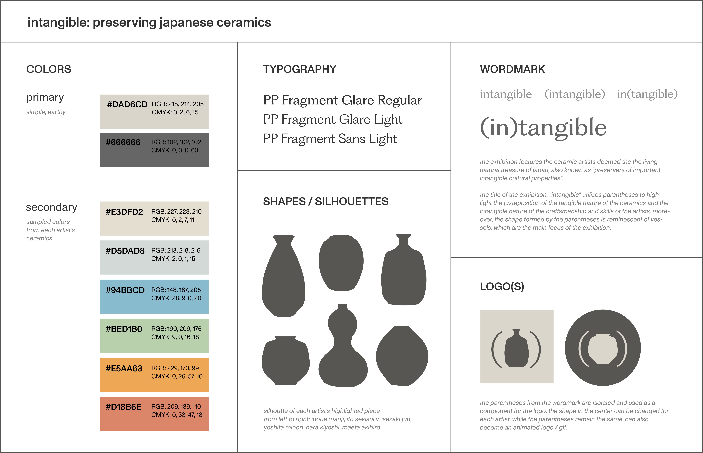

(in)tangible
exhibition visuals / identity
assets and promotional material for a ficitional exhibition called "(in)tangible: preserving japanese ceramics", showcasing work by 6 ceramists deemed as japan's national living treasures. components include exhibition catalog, landing page design, posters, and various pieces of merchandise.
1. Concept and Identity
Ideation process of color palettes, typographic system and key graphics.
2. Posters
Horizontal and vertical posters of different dimensions, utilizing the primary color palette. Mockups showing the posters in New York City.


3. Catalog Design
24-page booklet containing information about the exhibition, as well as the works and backgrounds of each of the 6 artists being featured.


4. Landing Page
Landing page design for the Brooklyn Museum website, featuring the (in)tangible exhibition.
5. Merchandise/Retail